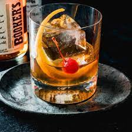

The old fashioned, surely the most elevated cocktail in this brief list, bares all it has in a small but multi-faceted pour that caters to those among us who can afford the bourbon that makes it so.
To make an old-fashioned, you'll need to gather the following ingredients in a dimly lit, leatherbound room:
- 1/2 teaspoon sugar
- 3 dashes Angostura bitters
- 1 teaspoon water
- 2 ounces bourbon (brand deliberately unspecified)
- Garnish: orange peel
The steps are as follows:
- Add sugar and bitters to a glass
- Add water and stir until sugar is nearly dissolved
- Fill with ice and add bourbon, stirring gently
- Squeeze the oil of the orange peel over the glass and place peel into glass
- Put your turtle neck on if it wasn't already, start the jazz, and pray your friend recommended the right bourbon
Back to homepage